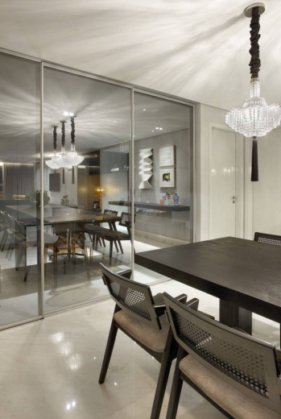
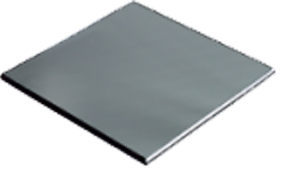
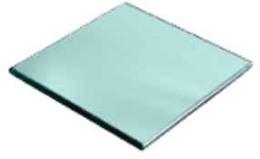
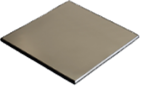
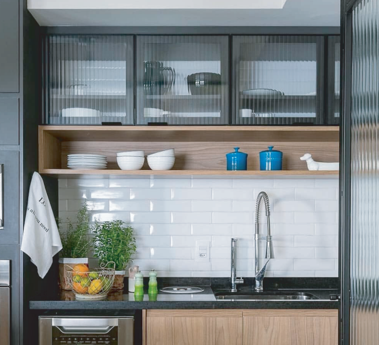
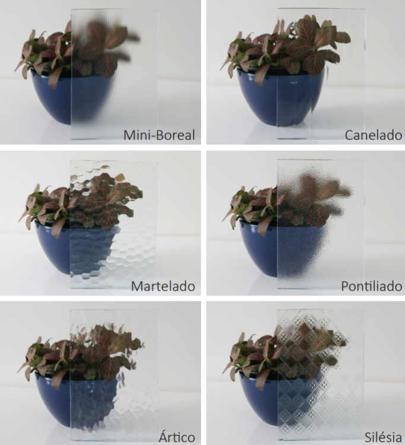
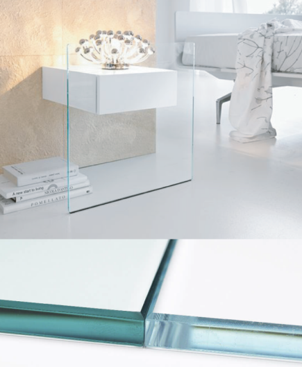
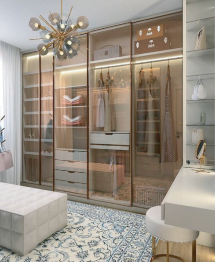
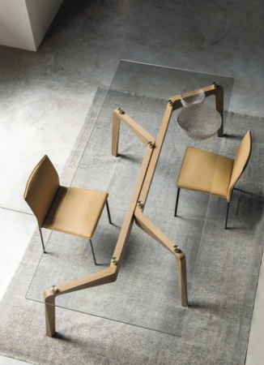

Vidros ideais para alta visibilidade, sem distorção óptica.
Versáteis e flexíveis, possuem diversas aplicações e possibilidades de tratamento.





O Vidro Impresso é um vidro difusor de luz que distorce
levemente a imagem, pois tem uma das suas faces impressa
por um cilindro, garantindo privacidade aos ambientes sem
que haja perda de luminosidade.
É um vidro produzido com
grande variedade de padrões, texturas, espessuras e cores,
proporcionando um efeito decorativo.

Único vidro que permite uma reprodução natural e verdadeira das cores
quando esmaltado, envernizado, serigrafado e impresso digitalmente.
Com transmissão luminosa superior a de um vidro comum, o Extra Clear
é altamente requisitado para projetos que requeiram clareza,
neutralidade e transparência.
Um vidro extremamente
transparente, sem o tom
esverdeado comum dos vidros
incolores. Essa característica
ganha destaque em aplicações
que exigem melhor visualização
do ambiente.


A superfície de todos os vidros reflecta
são espelhadas, refletem o ambiente
conforme a incidência da luz, mas ainda
tem certa transparência permitindo a
visualização interna.
Adaptam-se aos ambientes e transmitem
brilho sem roubar a cena. Podem ser
utilizados em diversas situações e
projetos, pois o aspecto espelhado se
comporta conforme a iluminação,
permitindo
diferentes resultados.


Cinco vezes mais resistentes a choques térmicos do que um vidro comum com
espessuras semelhantes, o vidro temperado é considerado um vidro de segurança.
Em caso de quebra, fragmenta-se sem pedaços pequenos, pouco cortantes,
podendo ser removidos com maior facilidade e segurança.
Por ser mais resistente, pode ser utilizado em aplicações estruturais
autoportantes sem a necessidade de caixilhos.
Acesse nosso catalogo completo clicando AQUI